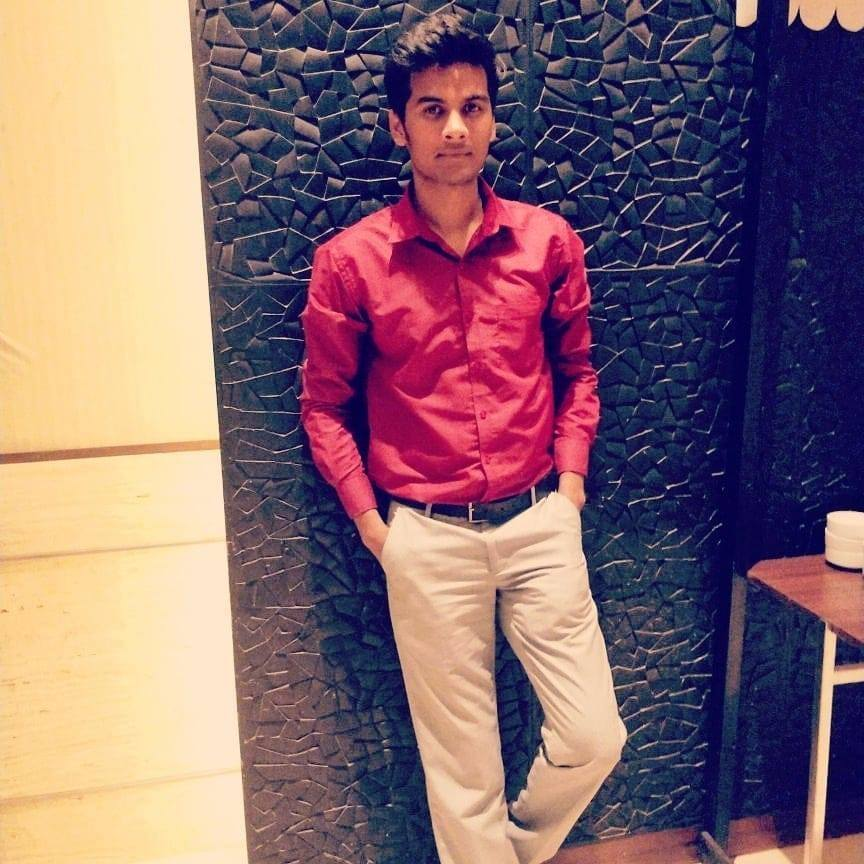

Aman Kumar
Associate Software Engineer
Accenture Solutions Pvt. Ltd.
Contact No.- 8340098934
Email Id- iamamanching@gmail.com

|  |
Aman Kumar
Associate Software Engineer
Contact No.- 8340098934
|
| Professional Summary | Academic Profile | Technical skills | Professional Experience | Key Strengths | Personal Vitae |
| E-Commerce/Internet:- | ASP.NET 2.0 / 3.5, HTML5, CSS3, XML | ★★★★☆ |
| Microsoft Technologies:- | ADO.NET 2.0, Class Library, WCF, MVC3. | ★★★★☆ |
| Languages:- | C, C#.NET, Core Java, JavaScript, Python, Powershell | ★★★★★ |
| Web & App Server:- | IIS 6.0, Remoting, Web Services.WCF, AJAX | ★★★☆☆ |
| Databases:- | SQL Server 2008/2012/2014. | ★★★★★ |
| Development Tools:- | Visual Studio.NET 2013/2015/2017/2019 | ★★★★★ |
| Data Access Technologies:- | ADO.NET, LINQ and EDM | ★★★★☆ |
| Business Intelligence | MSBI, SSIS, SSRS, Tableau | ★★★★☆ |
| Gender: | Male |
| Marital status: | Single |
| Address: |
2-57/P, Indira Nagar GachiBowli, Htderabad-500032 Locate Me |